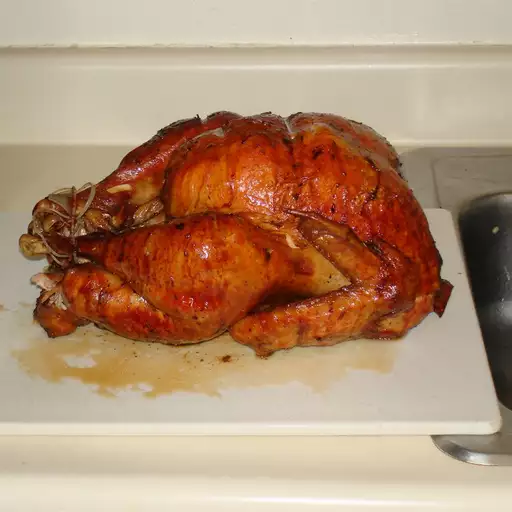

Turkey Brine

How to Make Turkey Brine
Making the brine couldn't be simpler: Just combine all the ingredients (besides the ice water) on the stove and bring to a boil. Stir the mixture frequently. When the salt is dissolved, remove from heat and let the brine cool completely.
Ingredients
- Vegetable Broth
- Salt
- Rosemary, Sage, Thyme, and Savory
- Water
Steps
- Make the brine by boiling the first six ingredients in a stockpot.
- Let the brine cool slightly, then transfer it to a bucket or stockpot. Add the ice water and stir.
- Place the prepared turkey in the brine and refrigerate overnight.
- When your turkey is done brining, remove it from the bucket and drain carefully.
- Discard the brine, making sure to disinfect anything it comes in contact with.
- Cook the turkey using the method of your choosing.
Home